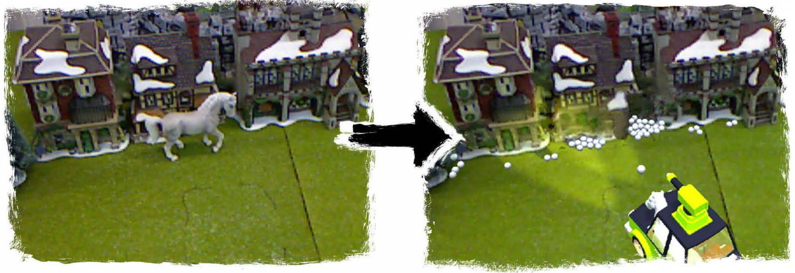

InpaintFusion: Incremental RGB-D Inpainting for 3D Scenes
IEEE Trans. on Visualisation and Computer Graphics (Invited TVCG paper at IEEE ISMAR 2020)
Shohei Mori, Graz University of Technology
Okan Erat, Graz University of Technology
Wolfgang Broll, Ilmenau University of Technology
Hideo Saito, Keio University
Dieter Schmalstieg, Graz University of Technology
and Denis Kalkofen, Graz University of Technology
Abstract
State-of-the-art methods for diminished reality propagate pixel information from a keyframe to subsequent frames for real-time inpainting. However, these approaches produce artifacts, if the scene geometry is not sufficiently planar. In this paper, we present InpaintFusion, a new real-time method that extends inpainting to non-planar scenes by considering both color and depth information in the inpainting process. We use an RGB-D sensor for simultaneous localization and mapping, in order to both track the camera and obtain a surfel map in addition to RGB images. We use the RGB-D information in a cost function for both the color and the geometric appearance to derive a global optimization for simultaneous inpainting of color and depth. The inpainted depth is merged in a global map by depth fusion. For the final rendering, we project the map model into image space, where we can use it for effects such as relighting and stereo rendering of otherwise hidden structures. We demonstrate the capabilities of our method by comparing it to inpainting results with methods using planar geometric proxies.
BibTex
@article{Mori:2020:InpaintFusion,
author={Mori, Shohei and Erat, Okan and Broll, Wolfgang and Saito, Hideo and Schmalstieg, Dieter and Kalkofen, Denis},
journal={IEEE Transactions on Visualization and Computer Graphics},
title={InpaintFusion: Incremental RGB-D Inpainting for 3D Scenes},
volume={26},
number={10},
pages={2994--3007},
year={2020},
doi={10.1109/TVCG.2020.3003768}
}